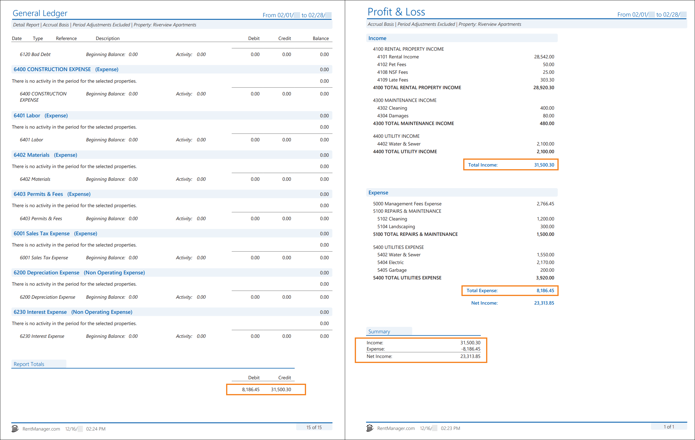

Source: https://rmxhelp.rentmanager.com/Topics/Express/KB/Report-GL-Profit-Loss.htm
General Ledger and Profit & Loss
Running the General Ledger and the Profit & Loss reports together with comparable report options allows you to verify the total income values match, thus ensuring your financial data in Rent Manager matches your real-world finances. This topic walks you through how to set up and generate each report so that they provide the fullest picture of your company's performance. This comparison is usually done at the end of the month, or if you need to find the full details on a balance amount.
Warning
The information contained here does not replace the advice of an accountant. If you are unclear about how to interpret the data presented in the related reports, please consult your accountant.
The General Ledger report allows you to examine transactions that impacted specific general ledger (GL) accounts over a given date range. The report displays all activity during the specified date range, giving you the ability to see how the selected GL accounts reached their balances.
The Profit & Loss shows financial activity in all income accounts and all expense accounts during a designated time range. It provides valuable insight into your company's profitability.
Both reports provide you with total income data, yet they display this data differently. The Profit & Loss displays your company's total income during a specified time period; whereas the General Ledger provides you with detailed account activity, showing you credits and debits against your GL accounts during the specified time period. Subtracting the total debits from the total credits gives you the same amount as the total income on the Profit & Loss. In other words, the General Ledger provides an expanded view of the income listed on the Profit & Loss to show exactly where those charges are coming from.
Related Privileges
| Group | Privilege | Column |
|---|---|---|
| Letter/Email Templates/Reports/Packets | Run reports | Enabled |
| Run accounting reports | Enabled |
Additionally, on the Reports tab, you must have access to General Ledger and Profit & Loss.
For more information, refer to Control User Access.
The General Ledger and the Profit & Loss display different information, but when examined together, these two reports give insight into your management company's financial health.

Report Options
To populate comparable reports, use the report option combinations listed in the table below. Follow these guidelines to generate a General Ledger and Profit & Loss that complement each other. Report options not mentioned do not affect comparability.
| General Ledger | Profit & Loss | Description |
|---|---|---|
|
Cash or Accrual |
Cash or Accrual |
Regardless of if you run in Cash or Accrual, the selected option needs to be the same for both reports. |
|
Chart Accounts to Include |
n/a |
Because the Profit & Loss includes all income and expense accounts, be sure only all Income and Expense GL accounts are selected on the General Ledger. Non-income and non-expense accounts should be unchecked. This can be quickly selected using the From Account and To Account fields, selecting the first income account and the last expense account. Related Preferences For troubleshooting purposes, it is also recommended that you select the GL account set as the net income system account, as selected in the Net income account field of system preferences. For more information, refer to General Ledger System Accounts (System Preferences). |
|
Date Range |
Date Range |
The same date range needs to be used for both reports. |
|
Detail or Summary |
n/a |
For troubleshooting purposes, it is recommended you select Detail so that you can view full transaction activity and click on a transaction to drill down to its details. |
|
Exclude period adjustments |
Exclude period adjustments |
Checking this option removes any journal entries marked as a Period Adjustment from the report results. If you select this option for one report, be sure to select it for the other. |
|
Properties/Owners to Include |
Properties/Owners to Include |
The same Properties, Owners, or property Group must be included in both reports. |
Troubleshooting If Income Amounts Are Different
If your report options are correctly matched according to the table above, the Credit field total at the end of the General Ledger matches the Total Income field total on the Profit & Loss, while the Debit field total matches the Total Expense field total. If you subtract the Debit total from the Credit total (or subtract Expense total from Income total), the difference amount matches the Net Income shown on the Profit & Loss.
Credit – Debit = Net Income
Income – Expense = Net Income
Sometimes, when you run the General Ledger and the Profit & Loss, the total income amounts may not match. In order to get the clearest picture of your management company's financial health, you'll want the total income amounts to match. The discrepancy in total income amounts is usually caused by human error or transactions coded to the net income general ledger account.
Manual Transactions are not Included in the P&L
Net income on the Profit & Loss is calculated by subtracting the Expense total from Income total.
Income – Expense = Net Income
This covers seamless transactions such as charges, payments, and checks used to pay expenses. It does not include other manual transactions such as beginning balances, journal entries, checks written to transfer funds, or Other Income entered on deposits (also known as Step 3 Deposits), all of which are included in the General Ledger. This may cause the amounts on the Profit & Loss and General Ledger to show differently.
You can track down the cause of these differences from the General Ledger report's section for your net income account and look for any activity in that account. From there, you can click on any transactions and determine if they need to be corrected, such as tying income to a specific property or tenant or tying expense transactions to the correct GL account.